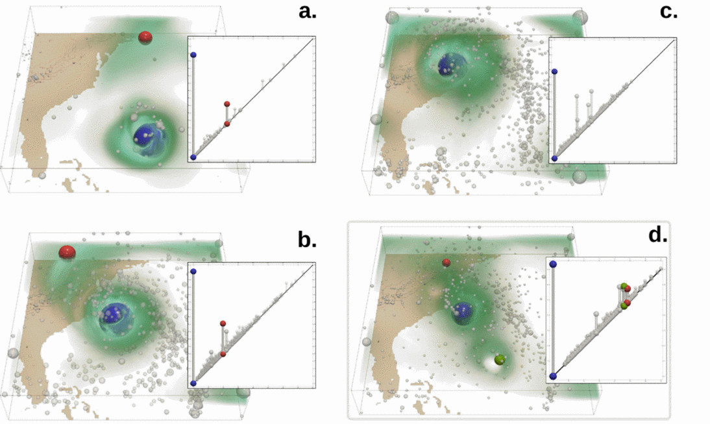
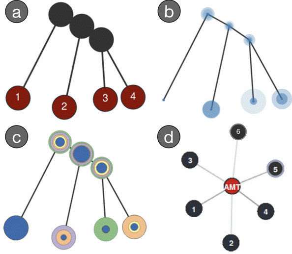
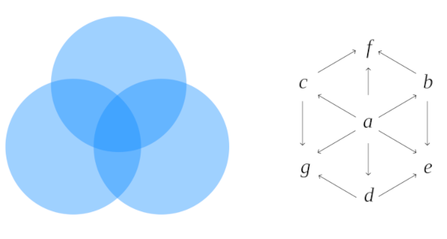
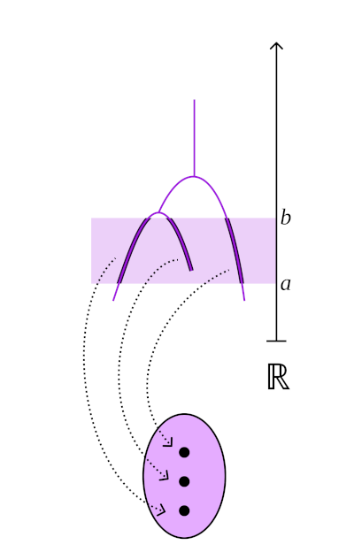
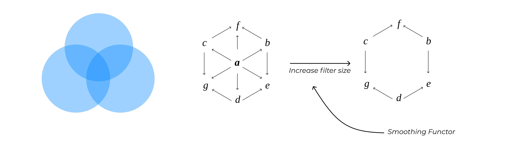
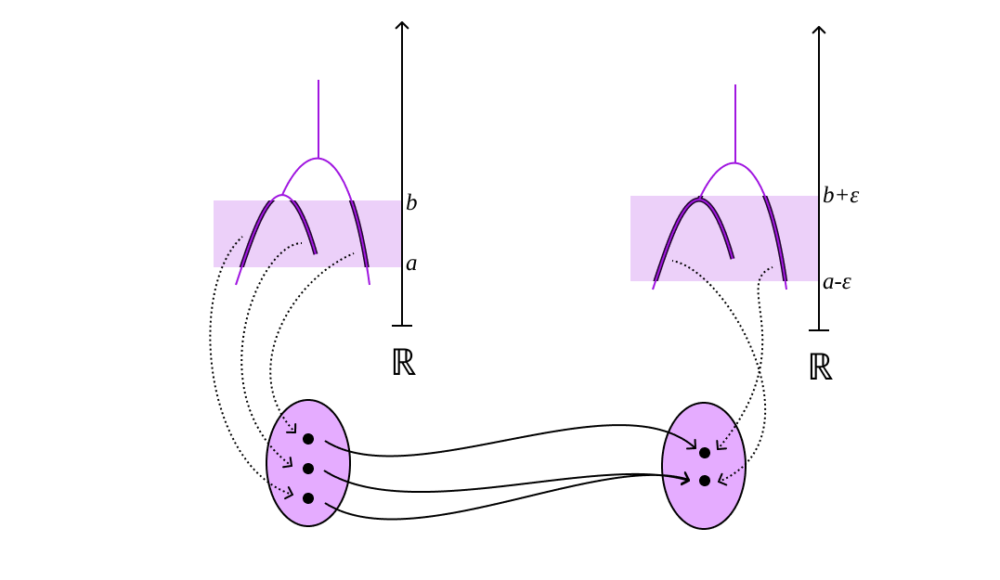
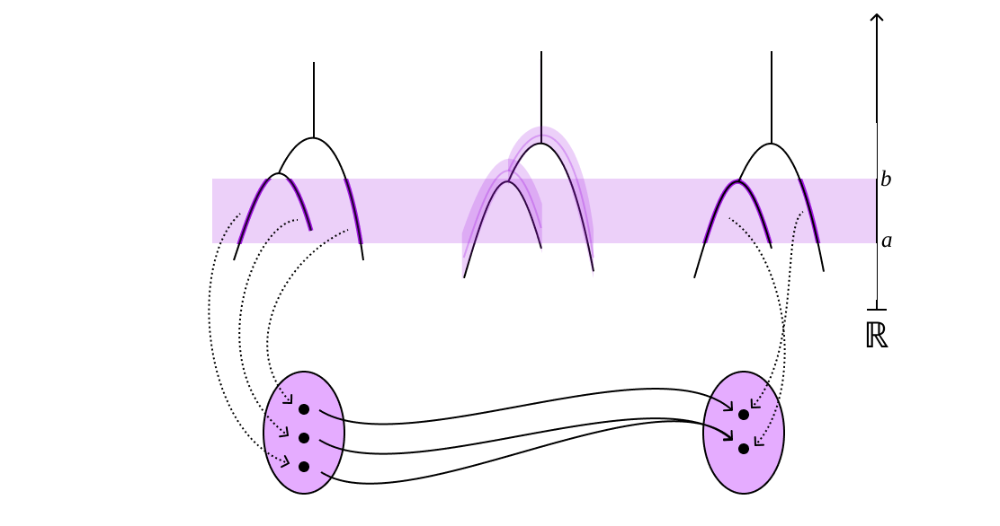

A pre-cosheaf is an assignment of data to open sets of a topological space $\mathbb{X}$ such that if $I \subseteq J$, then the data attached to $I$ maps to the data attached to $J$.
Analyzing Scalar Fields Through Topological Similarity
Brian Bollen
Why Use Topology for Data Analysis
- Topology can be used as a summary of the structure of data
- It is particularly insensitive to small variations in the geometry of the data
- Depending on the structure used, it is sensitive to the connectedness of the data, as well as existence of structures such as holes (homology).
- Couple examples of it being used? Maybe just images for the whole slide?
Topology on Multifaceted Data

DESCRIPTION

DESCRIPTION
IMAGE 3
DESCRIPTION
Topological Metrics
Bottleneck Distance [cite]
Wasserstein Distance [cite]
Functional Distortion Distance [cite]
Reeb Graph Edit Distance [cite]
Interleaving Distance [cite]
IMAGE 1
IMAGE 2
IMAGE 3
Scalar Fields
Definition
Let $\mathbb{X}$ be a topological space and let $f:\mathbb{X} \to \mathbb{R}$ be a continuous, real-valued function. The pair $(\mathbb{X},f)$ is called a scalar field
IMAGE(S) OF SCALAR FIELD
Reeb Graphs
Definition
Let $(\mathbb{X},f)$ be a scalar field. We can define an equivalence relation on $\mathbb{X}$ by defining $x\sim y$ if $f(x) = f(y) = a$ (they belong to the same $a$-fiber) and if $x,y$ are in the same path connected component of the $a$-fiber. Then, the quotient space $\mathbb{X}_f := \mathbb{X}/\sim_f$ is called the Reeb graph of the scalar field $(\mathbb{X},f)$. We equip the Reeb graph with the function $\tilde{f}$ which is defined as $\tilde{f} \circ \rho = f$, where $\rho: \mathbb{X} \to \mathbb{X}_f$ is the quotient map defined by our equivalence relation.

Interleaving Distance Motivation (?)
Category Theory
Definition
A category is a collection $\mathbf{C}$ of objects with morphisms that map between these objects.
Definition
A functor $\mathsf{F}: \mathbf{C} \to \mathbf{D}$ is a mapping between two categories $\mathbf{C}$ and $\mathbf{D}$, such that it preseves fundamental properties of the categories.
Definition
A natural transformation $\eta: \mathsf{F} \Rightarrow \mathsf{G}$ is a mapping between two functors $\mathsf{F},\mathsf{G}:\mathbf{C}\ \to \mathbf{D}$ which consists of a family of maps $\eta_a : \mathsf{F}(a) \to \mathsf{G}(a)$ for each object $a$ in $\mathbf{C}$ which respects morphisms in $\mathbf{C}$.
Category of Scalar Fields
Definition
The category of scalar fields, denoted as $\mathbb{R}\text{-}\mathbf{Top}$, has scalar fields as objects and continuous, function preserving maps as morphisms.
Category of Reeb Graphs and the Reeb Functor
Definition
The category of Reeb graphs, denoted as $\mathbf{Reeb}$ has Reeb graphs as objects and continuous, function preserving maps as morphisms.
Definition
The Reeb functor, denoted as $\mathcal{R} : \mathbb{R}\text{-}\mathbf{Top} \to \mathbf{Reeb}$, is defined by the formulas $\mathcal{R}(\mathbb{X},f) = (\mathbb{X}_f,\tilde{f})$ and $\mathcal{R}[\alpha] = \tilde{\alpha}$, where $\rho_g \circ \alpha = \tilde{\alpha} \circ \rho_f$.
Pre-Cosheafs

Category of Pre-Cosheafs
Definition
We define the category of pre-cosheaves, denoted as $\mathbf{Pre}$, to be the category of functors from the category of intervals $\mathbf{Int}$ to the category of sets $\mathbf{Set}$. The morphisms in this category are then natural transformations.
Definition
We define the Reeb cosheaf functor $\mathcal{C}$ using the following formulas:
- $\mathsf{F}(I) = \pi_0(f^{-1}(I))$
- $\mathsf{F}[I\subseteq J] = \pi_0[f^{-1}(I)\subseteq f^{-1}(J)]$.

Interleaving on Pre-Cosheafs
The Interleaving distance quantifies the distance between pre-cosheafs
by finding the minimum filter size $ε$ that we need to pass one pre-cosheaf
through in order to make it isomorphic to another pre-cosheaf.
Smoothing Functor
Definition
We define the $\varepsilon$-expansion functor $\Omega_{\varepsilon} : \mathbf{Int} \to \mathbf{Int}$ by the formulas $\Omega_{\varepsilon}(I) = I^{\varepsilon}$, where $I = (a,b)$ and $I = (a-\varepsilon,b+\varepsilon)$, and $\Omega_{\varepsilon}[I\subseteq J] = I^{\varepsilon} \subseteq J^{\varepsilon}$.
Definition
We define the $\varepsilon$-smoothing functor $\mathcal{S}_{\varepsilon}:\mathbf{Pre} \to \mathbf{Pre}$ by the formulas $\mathcal{S}_{\varepsilon}(\mathsf{F}) = \mathsf{F}\Omega_{\varepsilon}$ and $\mathcal{S}_{\varepsilon}[\mathsf{F} \Rightarrow \mathsf{G}] := \mathsf{F}\Omega_{\varepsilon} \Rightarrow \mathsf{G}\Omega_{\varepsilon}$


Interleavings between Reeb Graphs
Definition
Let $f := (\mathbb{X},f)$ and $g := (\mathbb{Y},g)$ be two Reeb graphs. We say that $f$ and $g$ are $\varepsilon$-interleaved if there exists maps $\varphi:\mathcal{C}(f) \Rightarrow \mathcal{S}_{\varepsilon}\mathcal{C}(g)$ $\psi:\mathcal{C}(g) \Rightarrow \mathcal{S}_{\varepsilon}\mathcal{C}(f)$ such that the following diagrams commute:
Interleaving Distance
Definition
Let $f := (\mathbb{X},f)$ and $g := (\mathbb{Y},g)$ be two Reeb graphs. The interleaving distance between $f$ and $g$ is
\[d_I(f,g) = \inf\{\varepsilon | \text{there exists an $\varepsilon$-interleaving between $f$ and $g$}\}\]
Thickening Functor
Definition
Let $f := (\mathbb{X},f)$ be a Reeb graph. We define the $\varepsilon$-thickening functor $\mathcal{T}_{\varepsilon} : \mathbf{Reeb} \to \mathbf{Reeb}$ by the following formulas:
- $\mathcal{T}_{\varepsilon}(\mathbb{X},f) := (\mathbb{X}_\varepsilon,f_{\varepsilon})$, where $\mathbb{X}_{\varepsilon} := \mathbb{X} \times [-\varepsilon,\varepsilon]$ and $f_{\varepsilon}:\mathbb{X}_{\varepsilon} \to \mathbb{R}$ is defined asy $f_{\varepsilon}(x,t) := f(x) + t$
- $\mathcal{T}_{\varepsilon}[\alpha]: (\mathbb{X}_\varepsilon,f_{\varepsilon}) \to (\mathbb{Y}_\varepsilon,g_{\varepsilon})$ is defined by $(x,t) \mapsto (\alpha(x),t)$, where $\alpha: (\mathbb{X},f) \to (\mathbb{Y},g)$.
Theorem
The functors $\mathcal{C}\mathcal{R}\mathcal{T}_{\varepsilon}$ and $\mathcal{S}_{\varepsilon}\mathcal{C}$ are naturally isomorphic.

Interleaving of Reeb Graphs
Definition
Let $\mathcal{U}_{\varepsilon} : \mathcal{R}\mathcal{T}_{\varepsilon}$ and let $f := (\mathbb{X},f)$ and $g := (\mathbb{Y},g)$ be two Reeb graphs. We say that $f$ and $g$ are $\varepsilon$-interleaved if there exists maps $\alpha:f \to \mathcal{U}_{\varepsilon}(g)$ and $\beta:g \to \mathcal{U}_{\varepsilon}(f)$ such that the following diagrams commute:
Geometric Interpretation of Interleaving on Reeb Graphs
- Example (?)
I think a couple simple examples would be good here
Computational Complexity of Interleaving Distance
Give a description for why computing this is NP hard
Topological Metrics (Revisit)
State which metrics are difficult to compute
Bottleneck Distance [cite]
Wasserstein Distance [cite]
Functional Distortion Distance [cite]
Reeb Graph Edit Distance [cite]
Interleaving Distance [cite]
IMAGE 1
IMAGE 2
IMAGE 3
Interleaving Example of Sensitivty/Insensitivity
Other metric Example of Sensitivty/Insensitivity
Proposal for Milestone 0
We would like to conduct a survey / empirical study of the most prevelant topological metrics to examine their role in measuring similarity between scalar fields and /or their role in multifaceted data analysis in general. Furthermore, we would like to generate a comprehensive list of the computational complexities that each of these metrics have.
Graph Convolutional Neural Networks
Going to construct an image for how GCNNs work
- The input is a Graph $G = (V,E)$ as well as a matrix of node feature vectors $\mathbf{X}$.
- Just as in CNNs, we define a receptive field which is the set of node in the graph which contribute information to a target node
- At each layer, we sweep through the graph to update the state of each node (so each node is at some point the target node for a receptive field)
- The final output is a matrix of hidden feature vectors $\mathbf{H}$. We can add a final layer to this GCNN which aggregates $\mathbf{H}$ to give a single readout, which will calssify the graph as a whole instead of the individual nodes.
Learning Topological Similarity Metric Through Siamese Networks
Going to construct an image for how this learning works in theory
- A Siamese network consists of two neural networks with the same weight matrix at every step
- Positive pairs and negative pairs are fed into the system (known to be close or far)
- The weights are adjusted based on a metric which will be minimized for positive pairs and maximized on negative pairs [cite paper, even use image, perhaps]
Proposal for Milestone A
We propose using the Siamese network architecture couple with spatial GCNNs to learn a similarity metric on Reeb graphs. To train this data in a supervised manner, we will the data set using various topological metrics found in Milestone 0. This is dependent on both the type of similarity we are learning as well as the computational difficulties that we might face for various metrics.
Proposal for Milestone B
Flush out interleaving example as much as possible before this